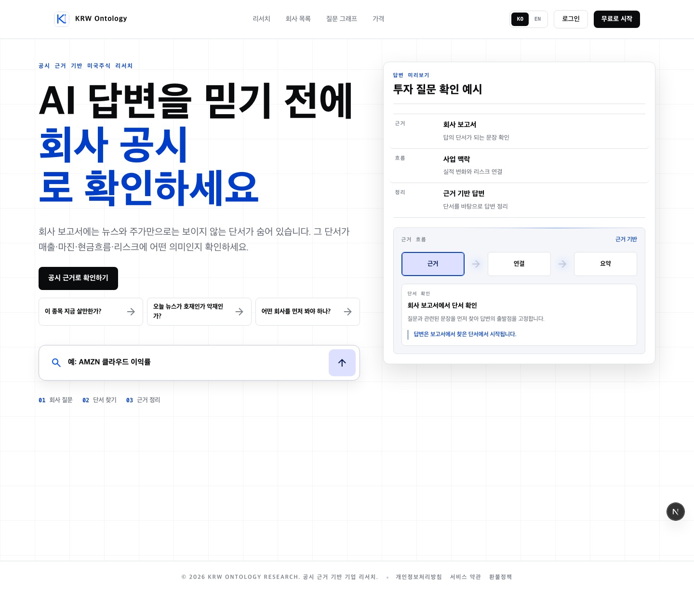
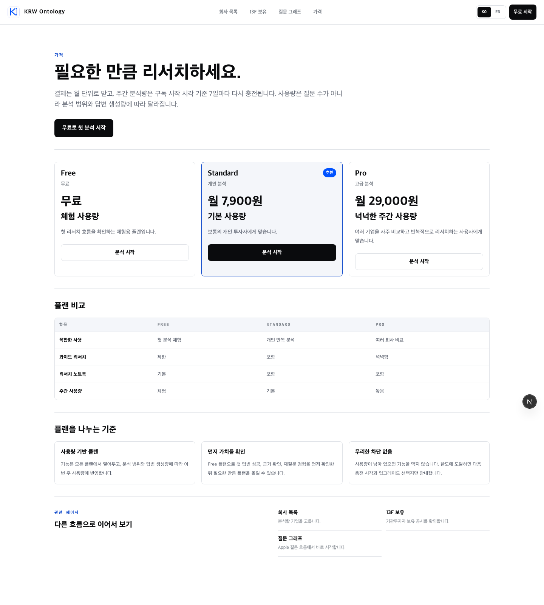

대상: KRW Ontology 공개·로그인·가격 화면. 2026-07-13 로컬 화면과 소스 기준.


| 우선순위 | 화면·위치 | 현재 | 권장 | 이유 |
|---|---|---|---|---|
| P0 | 로그인 | “무료 베타로 기업 분석 시작”, “무료 베타 · 카드 불필요”, “Google로 무료 시작” | “기업 리서치 시작”, “Google 계정으로 시작 · 이전 화면으로 돌아갑니다”, “Google로 계속” | 베타 종료를 가장 분명히 보여 주는 진입점이다. “카드 불필요”는 유료 결제가 즉시 시작되지 않는 사실일 때만 유지한다. |
| P0 | 공개 내비게이션·홈 헤더 | “무료 시작” | “리서치 시작” | 홈의 주 CTA “공시 근거로 확인하기”와 같은 결과 중심 언어로 맞춘다. |
| P0 | 회사 상세 CTA | “AMZN 무료 분석 시작” | “AMZN 분석 시작” | 종목을 고른 뒤의 행동을 정확히 설명하며, 베타 혜택처럼 보이지 않는다. |
| P1 | 가격 히어로 CTA | “무료로 첫 분석 시작” | “첫 분석 시작” | 바로 아래 Free 플랜 카드가 가격 정보를 담당하므로 CTA까지 무료를 반복할 필요가 없다. |
| P1 | 검색/공유용 OG 이미지 | “무료 베타에서 시작…” | “필요한 리서치 범위에 맞는 플랜을 선택하세요.” | 웹·메신저 미리보기는 오래 캐시되어, 종료된 베타 문구를 가장 오래 남길 수 있다. |
| P1 | 사용량 경고 | “무료 사용량을 모두 사용했습니다/거의 찼습니다” | “체험 사용량을 모두 사용했습니다/거의 찼습니다” 또는 “현재 플랜 사용량…” | Free 플랜을 계속 운영한다면 “무료”보다 플랜·사용량 문맥을 명확히 한다. Free 플랜을 없앤다면 반드시 함께 변경한다. |
free, beta: 이번 작업은 표시 카피 정리다. 데이터 마이그레이션으로 넓히지 않는다.src/app/share/[token]/page.tsx, src/app/[locale]/share/[token]/page.tsx와 공유 OG/API는 이번 변경 대상에서 제외한다. 현재 “무료/베타” 표시 카피도 검색되지 않았다.표시 카피만 바꾸는 작은 변경으로 제한한다. 예상 대상은 src/app/login/page.tsx, src/app/login/layout.tsx, src/components/PublicTopNav.tsx, src/components/HomeInteractions.tsx, src/app/[locale]/(public)/companies/[ticker]/page.tsx, src/app/[locale]/(public)/pricing/page.tsx, src/lib/og/page-og.ts, src/lib/billing/entitlement-model.ts와 해당 E2E 라벨이다.
변경 뒤에는 소스 검색에서 공유 라우트를 제외한 사용자 노출 “무료 분석”, “무료 베타”, “Start free”, “free beta”가 사라졌는지 확인하고, 회사 상세 E2E의 링크 이름을 “AMZN 분석 시작”으로 갱신한다.